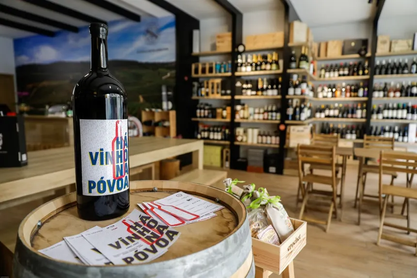

Um pouco do começo
A vinheria Agnello é uma empresa familiar de São Paulo que atua há mais de 15 anos com uma loja física, a empresas se destaca pelo atendimento personalizado, devido ao fato de seus vendedores possuirem um alto conhecimento em vinhos, o que colabora a uma melhor Experiência aos seus clientes
-
Dificuldades
Durante a pandemia da Covid-19, a vinheria sofreu diversas perdas de clientes, pois a maioria de seu publico frequentava o estabelecimento de forma presencial, para que não fosem esquecidos a empresa decidiu optar pela vendas de seus vinhos pela internet.O proprietário, Giulio, inicialmente era contra o e-commerce porque acreditava que a venda online não conseguiria oferecer a mesma experiência da loja física. Depois, seguindo a sugestão de sua filha Bianca, Giulio decidiu investir na criação de um portal de e-commerce. O objetivo é levar para o ambiente virtual uma experiência de compra semelhante à oferecida na loja física, principalmente o atendimento e as recomendações personalizadas.
